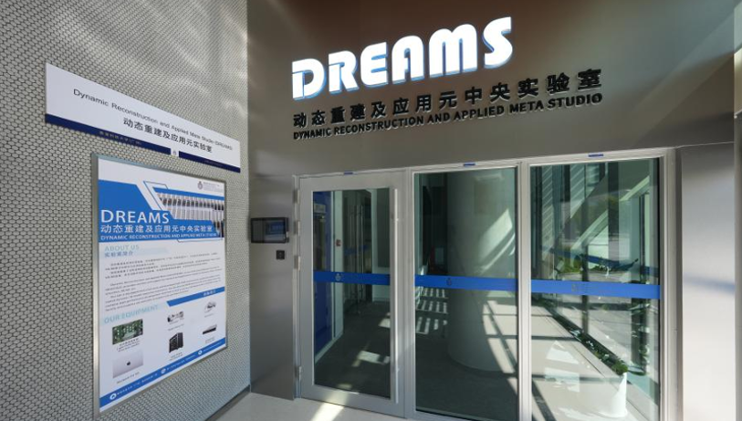
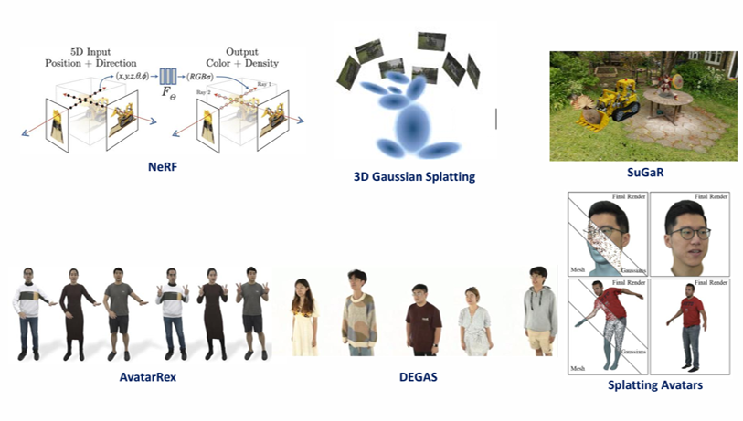
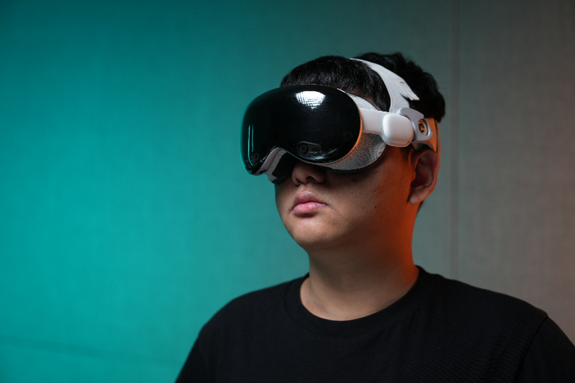
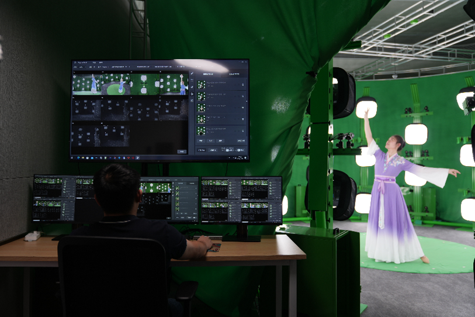

策划一：动态重建及应用元中央实验室




动态重建及应用元实验室（DREAMS），作为学校中央实验室之一，为全校师生提供体积视频、三维重建、数字人、VR/AR等方向研究与应用的服务与支持。实验室配备全栈自主研发的光场重建系统和其他开发设备，为我校师生提供先进的设备支持，同时将向其他高校与业界开放，成为国内，乃至全世界范围内，首批将体积视频应用在各领域的单位，为学校在大湾区乃至全球的产学研合作提供助力。
实验室核心设备为全栈自主研发的光场重建系统。该系统使用球形部署的上百台超高精度工业相机及红外发射器构成数据采集矩阵，对阵列中的人/物进行环绕式同步数据采集(例如颜色、深度信息)，并基于布置在云端的算法进行自动化三维重建，从而生成连续三维立体模型组成的动态模型序列，也就是体积视频。
策划二：DREAMS Lab 设备支持

DREAMS Lab 为全校师生提供先进的XR+AI设备支持，包括光场重建系统、VR/AR设备、三维建模工作站等。实验室支持学生、教师和研究人员开展创新性研究项目，推动XR技术在教育、科研和产业应用的发展。
我们欢迎全校师生预约使用实验室设备，共同探索XR+AI的无限可能。设备使用指南和预约流程详见实验室官网或联系我们获取更多信息。